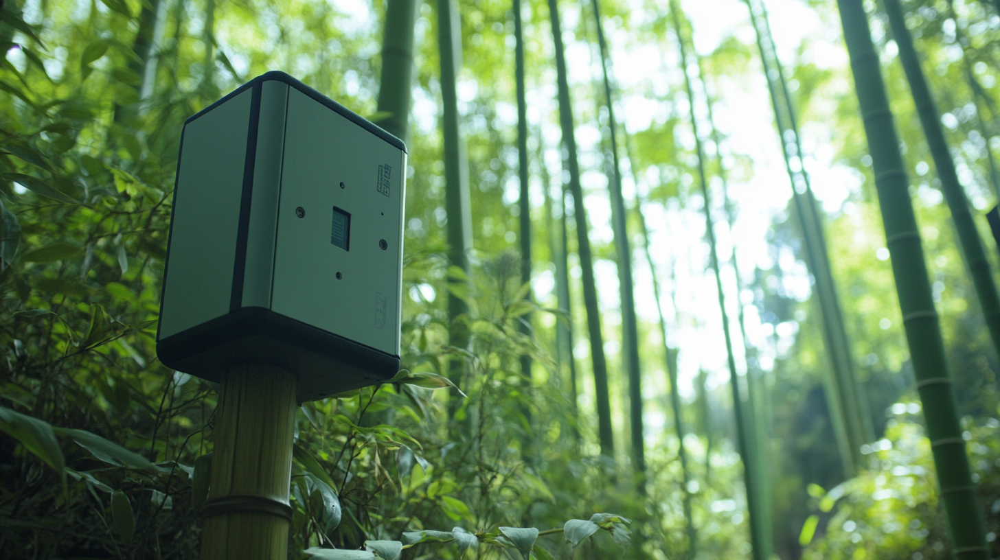
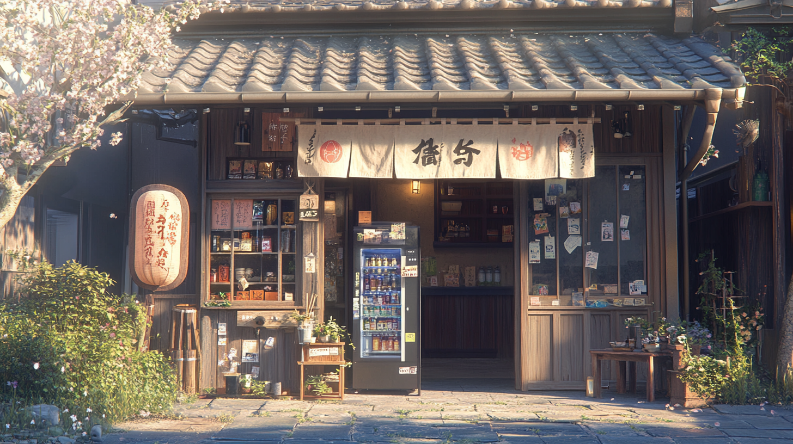
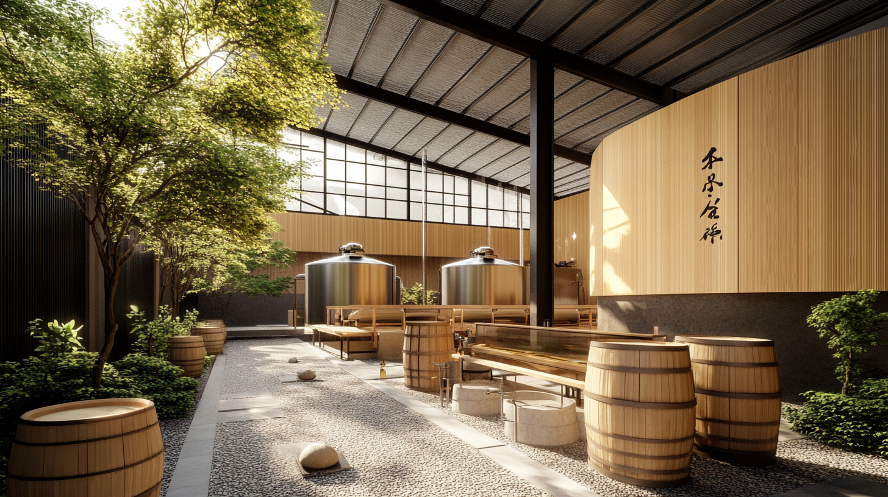

Highlighted Projects
Hikari Machiya Studio

Participate in workshops for washi paper making and indigo dyeing, reviving ancient techniques in Kyoto's historic Gion district.
Akari no Michi
Walk along Kyoto's streets illuminated by solar-powered lanterns designed by local artists, blending tradition with innovation.
Katzura Eco-Island Center
Experience the Katzura Eco-Island, a biodiversity project fostering environmental awareness along Kyoto's riverbanks.
Bamboo Grove Knowledge Trail
Learn about IoT innovation in Kyoto's bamboo forests, where smart technology monitors carbon capture and soil health.
Kura no Megumi
Visit a solar-powered sake brewery that preserves traditional techniques while embracing renewable energy.
Midori no Kura
Discover how fermentation waste is transformed into bioenergy, blending tradition with cutting-edge sustainability.